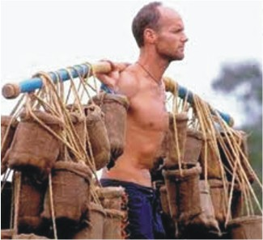

Into The Fire...Again
An interview with Survivor TV Celebrity: Mike Skupin
As the news blazes through television networks and national publications, the country has caught the fever and excitement of Mike Skupin’s return to the television series, Survivor. You may remember Mike as the guy who was headed for the winners circle on the 2nd season of CBS’s Emmy Award winning reality show Survivor: The Australian Outback. This professional thrill-seeker is competing this fall on Survivor: Philippines (2 hour premier, Wednesday, Sept. 19th on CBS TV). Mike has been speaking in churches sharing the Gospel and now has a tremendous opportunity since being invited back on the show.
Gary Scarano: Mike… the word is out; you’ve back on Survivor!
MIKE SKUPIN: Hey, Gary… I am ready and really excited to be back and I think that’s the reason why it’s as contagious as it is. You know when you’re passionate about what you’re doing, people around you can’t help but get ‘fired up’…no pun intended of course. This is going to be a new adventure for me and I anticipate players and challenges and twists being epic.
GS: Mike, people still remember those shocking images in 2001 on the Australian Outback episode. You were building a fire when you inhaled smoke and passed out. You fell forward, hands and face first and laid unconscious passed out for what’s reported as 10-15 seconds. You then ran into the river. The audience was shocked to see the burns and the skin on your hands literally melt off on national TV as you screamed in the water. TV Guide listed this as one of the Top Twenty Most Unexpected Moments on TV – EVER!
MS: Yes, and I was the first contestant to be ‘medically evacuated’ from the show. It’s been 23 seasons, but I feel I’m as strong and maybe a little wiser now. I’ve never stopped craving the life-changing adventure of it and the desire to do it again.
GS: Resilience!
MS: Contrary to what people may think, I’m not here for redemption…or to prove anything to the world…I’m here to play the game again, from start to finish. The most vivid image the world has of me is my hands being burned to a crisp; but the image that burns in my heart is my dad telling me before he passed on - “Son, I’m going away now – maybe for a very long time. I want you to always remember how much Daddy loves you.” I was only 4 years old then and his face… those words still burn inside of me and drive me to do things with passion and intensity.
GS: Is that what led you to Christ?
MS: Actually it was during the height of my wild and crazy college days I got saved! At some point, I decided I didn’t want to walk through the peaks and valleys of life alone without a Savior to share it with. I was asked a very important question: Do YOU know for sure you're going to Heaven when you die? Up until that point I could not answer that question. Now I can live with a comfort and a peace like none I'd ever experienced before. There were several very specific incidences in my life that catapulted me to new and deeper levels of my faith and it wasn't until I went to the Australian Outback that I came into a full understanding of what it took to live my faith.
GS: Mike, what do you want to leave us with as we watch you this time around?
MS: Our lives get so busy; we so often miss what Jesus is doing for us and in us. We were stripped of everything familiar to us. In the silence, we saw Jesus so clearly. I want people to see that in Jesus, I have been made new; I’ve been healed and have overcome. People often ask me about the healing of my hands, but the real story is in the healing of my heart. I didn’t let a terrible situation defeat me with fear….I allowed it to make me stronger…in every possible way. After my earthly father had gone to Heaven, I was left with an overwhelming feeling of ‘sink or swim’ – I want people to see someone who chose to swim.
www.MikeSkupin.com
www.ReachOutCom.com email info@ReachOutCom.com.
Gary Scarano, founder of www.ReachOUT.tv, a Christian TV show & Founder and President of ROCC. www.ReachOUT.tv. ROCC is helping clients such as Fox News Commentator Dr. Gerry Curatola (www.Dr Gerry.net); and the popular NJ Christian Concert series www.RevGen.org with their Social Networking needs. www.ReachOUT.tv. Broadcast via cable into 3.7 million homes in the NY Metro area. www.ReachOut.org/loveexpressarticles.